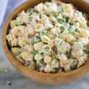

Tuna Scroodle

Description
Comfort food for depressed people. Yay!
Ingredients
- 2 packages instant noodles
- only one of the seasoning packets from those noodles
- frozen veggies of your choice (California mix, broccoli and cauliflower, stir fry mix, whatever.)
- mayo (or sour cream or yogurt, or butter. Basically noodle lube...)
- optional: any seasonings you feel like adding.
- one can tuna (or other canned meat) 170g-ish
Directions
- Boil water. Add noodles and veggies and cook till desired softness. (Harder veggies can be added, partially cooked, and THEN add the noodles, if you give enough of a flying f**k) while the noodles/veggies are cooking, drain tuna and dump on a dinner plate. Spoon about 2 heaping scoops of mayo on top, dump the dry seasoning packet on. Add any seasonings you feel like (or don't). When the noodles/veggies are finished cooking, drain and dump on top. Mix. Eat. Chill leftovers for a later depression-meal right out of the container/fridge.
- Boil water. Add noodles and veggies and cook till desired softness. (Harder veggies can be added, partially cooked, and THEN add the noodles, if you give enough of a flying f**k) while the noodles/veggies are cooking, drain tuna and dump on a dinner plate. Spoon about 2 heaping scoops of mayo on top, dump the dry seasoning packet on. Add any seasonings you feel like (or don't). When the noodles/veggies are finished cooking, drain and dump on top. Mix. Eat. Chill leftovers for a later depression-meal right out of the container/fridge.